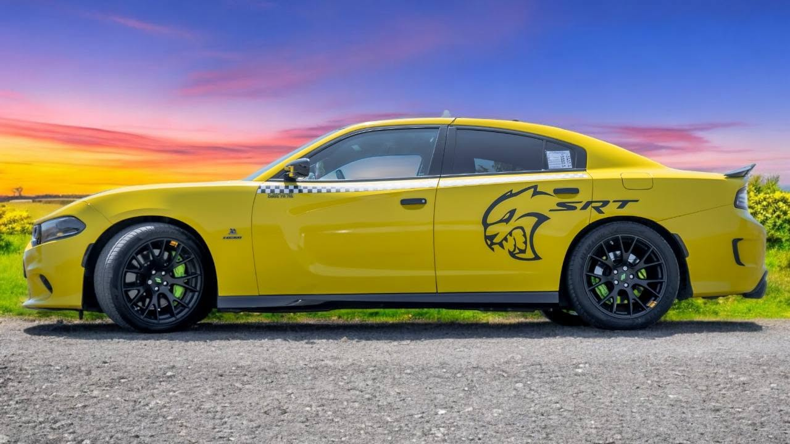

Fast. Reliable. On time. Your comfort is our mission. A long-established company providing safe, honest transfers to Burgas Airport, Sozopol, Sunny Beach and the whole Southern Black Sea coast — at competitive prices.
If you're looking for a reliable taxi along the Southern Black Sea coast and the Southern Beach area, Taxi Kiten – Todor Ivanov is a convenient and safe choice for locals and tourists alike.
The company offers professional taxi services in Kiten, Burgas region, as well as transport to popular seaside destinations — Primorsko, Lozenets, Sozopol, Tsarevo and other towns in the region.
With many years of experience in the taxi business, Taxi Kiten – Todor Ivanov has established itself as a preferred service for fast, comfortable and honest transport. Whether you need a taxi for a short trip in Kiten, a transfer to a neighbouring resort, or a journey to a more distant destination along the Southern Black Sea coast, you can count on a prompt response and professional attitude.
With over 260 positive customer reviews, Taxi Kiten stands out for its good reputation, punctuality and personal attention to every passenger. The service suits both everyday trips and tourists looking for convenient transport along the Southern coast and the Kiten area.
Contact:
+359 895 797 009
+359 895 711 715
We have 4 different air-conditioned cars, so we can pick the best one for your trip — whether you travel solo, as a couple or in a group.

One of our 4 vehicles — a signature choice for a fast, comfortable private transfer to Burgas Airport and the seaside resorts.
CallWe serve Kiten, Primorsko and the whole Southern Black Sea coast — transfers to and from Burgas Airport at any time. Call for a fixed price for your route.
Call or message us on Viber/WhatsApp for a quote for your trip.
Safe and reliable service, tailored to your schedule.
To and from Burgas Airport at any time — on time for your flight or a meet & greet on arrival.
Available around the clock, every day of the week, including holidays.
Clear, fair prices for transfers across the Southern Black Sea coast — no surprises.
We help with loading and unloading — spacious boot for cases and bags.
Book quickly and easily via Viber or WhatsApp on +359 895 797 009.
Fill in the form or call directly on +359 895 797 009. We'll confirm your trip as quickly as possible.
A long-established company with proven quality — over 260 positive reviews from happy customers.
A trusted company in the Kiten and Primorsko area, relied on by locals and tourists alike.
Responsible driving, clean vehicles and fair treatment of every customer.
Punctual for pickups and drop-offs — we arrive with time to spare.
Over 260 positive reviews from happy customers — a strong reputation and punctuality.
Answers to the most common questions about our transfers.
Yes, we're available around the clock, every day. Call +359 895 797 009 any time.
Yes — it's our main service. We run transfers to and from Burgas Airport for Kiten, Primorsko, Sozopol and the whole Southern Black Sea coast.
Call or message us on Viber/WhatsApp at +359 895 797 009 and you'll get a fixed price for your route — competitive and with no hidden fees.
Call +359 895 797 009, message us on Viber or WhatsApp, or fill in the booking form on the website.
Over 260 positive reviews from happy customers.
"Reliable and on time — transfer from Kiten to Burgas Airport with no problems at all. Clean car and a friendly driver."
"We use them every summer. They always arrive on time and the price is fair. Highly recommend!"
"A safe and comfortable ride, a clean car and a pleasant driver. Will use them again!"